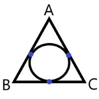
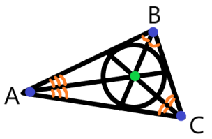
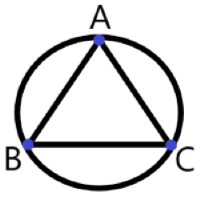
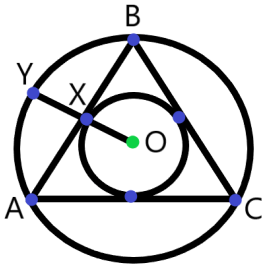
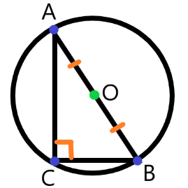
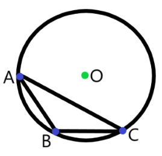

Вписанная окружность
Определение 41: Окружность называется вписанной в треугольник, если она касается всех его сторон.

Описанная окружность
Определение 42: Окружность называется описанной около треугольника, если она проходит через все его вершины.


